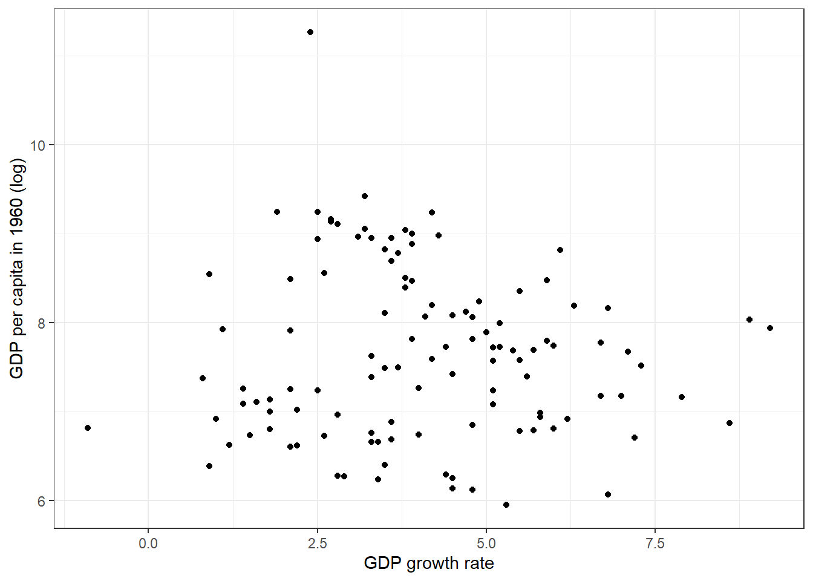
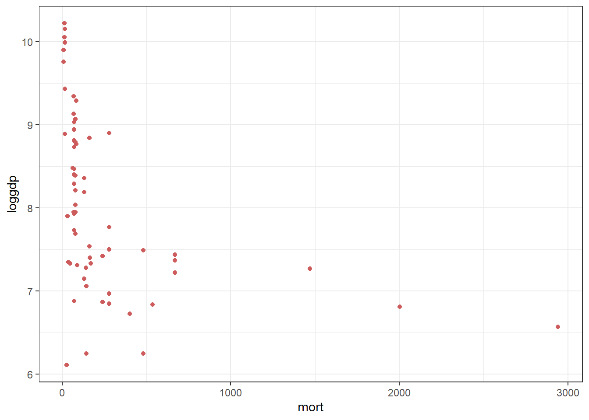
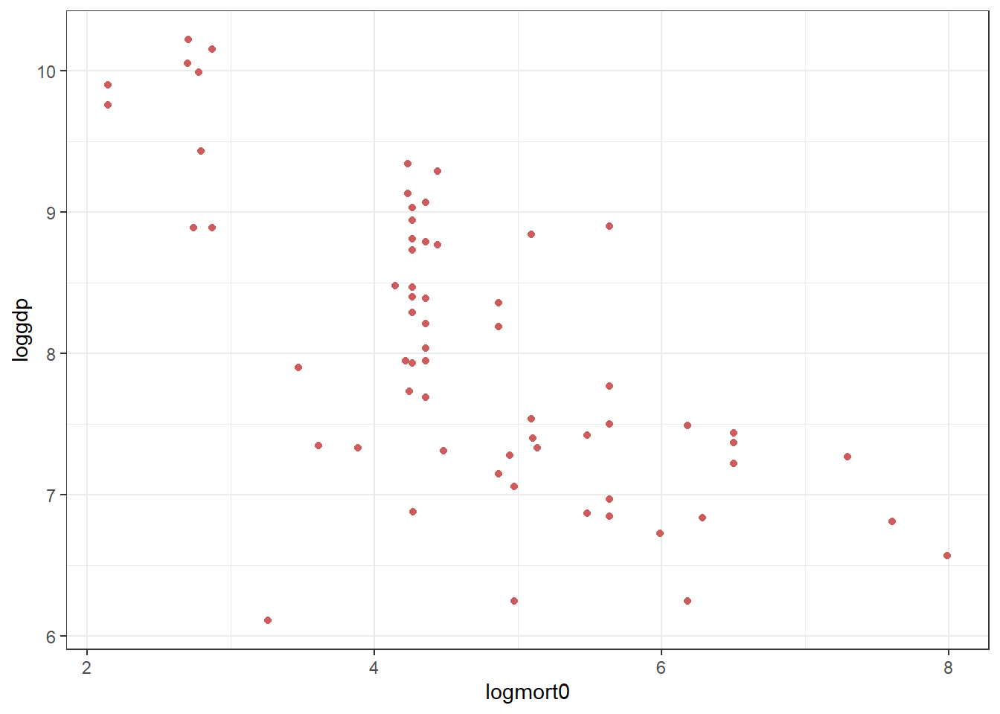
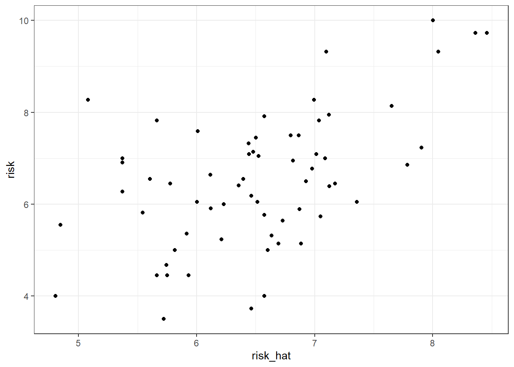

path = "C:/users/mateomoglia/dropbox/courses/polytechnique/2025_eco1s002/tutorial3"
library(dplyr)
library(ggplot2)
library(readxl)Tutorial 4: Econometrics with R (Solution)
Recap
Last week, we discovered the OLS estimator and what it does. It allows to assess, under certain conditions, the linear relation between an explained variable \(y\) and explanatory variables \(X\), using \(n\) individual observations.
Recall that OLS estimator is biased. If the estimator is biased \(E(\epsilon|X) \neq 0\). Bias may arise in three main cases:
- Measurement error. If the observed value \(\tilde{X}\) of the real variable \(X\) is biased, then it writes \(\tilde{X} = X + \mu\). Then the exogeneity assumption does not hold.
- Omitted variable bias. The true model is \(y_i = \alpha + \beta_1 x_i + \beta_2 z_i + \epsilon_i\). If we estimate \(y_i = \alpha + \beta_1 x_i + \epsilon_i\), we may under- or over-estimate the effect of \(x\) and \(y\).
- Reverse causality (or simultaneity). The true model is \[ \begin{align*} y_i &= \alpha_0 + \alpha_1 x_i + \alpha_2 z_i + u_i \\ x_i &= \beta_0 + \beta_1 y_i + \beta_2 z_i + v_i \end{align*} \]
Rearranging yields a reduced-form model \(y_i = \pi_0 + \pi_1 z_i + \pi_2 x_i + e_i\), but \(e_i\) contains both \(u_i\) and \(z_i\) and the exogeneity assumption might be violated.
Exercise 1: Solow model and OVB
Dataset MRW_QJE1992.xlsx can be downloaded on Moodle.
Baseline Solow model
Before, we load the necessary libraries and create an object path to store the path for further use.
- Open the dataset with the function
read_xlsxfrom the packagereadxl
dat = read_xlsx(paste0(path,"/data/MRW_QJE1992.xlsx"))- Describe the dataset
summary(dat) number country n i
Min. : 0.00 Length:128 Min. :0.0000 Min. :0.0000
1st Qu.: 25.75 Class :character 1st Qu.:1.0000 1st Qu.:0.0000
Median : 57.50 Mode :character Median :1.0000 Median :1.0000
Mean : 57.66 Mean :0.8099 Mean :0.6198
3rd Qu.: 89.25 3rd Qu.:1.0000 3rd Qu.:1.0000
Max. :121.00 Max. :1.0000 Max. :1.0000
NA's :7 NA's :7
o rgdpw60 rgdpw85 gdpgrowth
Min. :0.0000 Min. : 383.0 Min. : 412 Min. :-0.900
1st Qu.:0.0000 1st Qu.: 973.2 1st Qu.: 1209 1st Qu.: 2.800
Median :0.0000 Median : 1962.0 Median : 3484 Median : 3.900
Mean :0.1818 Mean : 3681.8 Mean : 5683 Mean : 4.094
3rd Qu.:0.0000 3rd Qu.: 4274.5 3rd Qu.: 7719 3rd Qu.: 5.300
Max. :1.0000 Max. :77881.0 Max. :25635 Max. : 9.200
NA's :7 NA's :12 NA's :20 NA's :11
popgrowth i_y school countrycode
Min. :0.300 Min. : 4.10 Min. : 0.400 Length:128
1st Qu.:1.700 1st Qu.:12.00 1st Qu.: 2.400 Class :character
Median :2.400 Median :17.70 Median : 4.950 Mode :character
Mean :2.279 Mean :18.16 Mean : 5.526
3rd Qu.:2.900 3rd Qu.:24.10 3rd Qu.: 8.175
Max. :6.800 Max. :36.90 Max. :12.100
NA's :21 NA's :7 NA's :10 head(dat)# A tibble: 6 × 12
number country n i o rgdpw60 rgdpw85 gdpgrowth popgrowth i_y
<dbl> <chr> <dbl> <dbl> <dbl> <dbl> <dbl> <dbl> <dbl> <dbl>
1 1 Algeria 1 1 0 2485 4371 4.8 2.6 24.1
2 2 Angola 1 0 0 1588 1171 0.8 2.1 5.8
3 3 Benin 1 0 0 1116 1071 2.2 2.4 10.8
4 4 Botswana 1 1 0 959 3671 8.6 3.2 28.3
5 5 Burkina Fa… 1 0 0 529 857 2.9 0.9 12.7
6 6 Burundi 1 0 0 755 663 1.2 1.7 5.1
# ℹ 2 more variables: school <dbl>, countrycode <chr>- Using
ggplot2package, make a graph to plot on the \(x\) axis the GDP growth and on the \(y\) axis the log GDP in 1965. Export inpdf.
ggplot(dat, aes(x = gdpgrowth, y = log(rgdpw60))) +
geom_point() +
theme_bw() +
xlab("GDP growth rate") + ylab("GDP per capita in 1960 (log)")Warning: Removed 12 rows containing missing values or values outside the scale range
(`geom_point()`).
ggsave(paste0(path,"/output/graph_solow.pdf"))Saving 7 x 5 in imageWarning: Removed 12 rows containing missing values or values outside the scale range
(`geom_point()`).- In the paper, different country groups are defined. Create the grouping variable, depending on country types. Hint: use
ifelse(test,value if true, value if false). Notice that countries \(o\) are a subset of countries \(i\) which are a subset of countries \(n\).
dat = dat %>%
mutate(group = ifelse(n == 1, "n", NA)) %>%
mutate(group = ifelse(i == 1, "i", group)) %>%
mutate(group = ifelse(o == 1, "o", group)) %>%
filter(!is.na(group)) # Some countries are not part of a group, we remove them- Estimate this model and store in an object called
reg0\[ \log (Y_i/L_i) = \beta_0 + \beta_1 \log s_i + \beta_2 \log(n + g + \delta) + \epsilon_i \]
We define \(g + \delta = 0.05\).
# Generate the variables for the regression ------------------------------------
dat = dat %>%
mutate(constant = 0.05)
# Unconditional and conditional regressions ------------------------------------
reg0 = lm(log(rgdpw85) ~ 1 + log(i_y) + log(popgrowth + constant), data = dat)
summary(reg0)
Call:
lm(formula = log(rgdpw85) ~ 1 + log(i_y) + log(popgrowth + constant),
data = dat)
Residuals:
Min 1Q Median 3Q Max
-1.74635 -0.42958 0.04203 0.44671 1.50149
Coefficients:
Estimate Std. Error t value Pr(>|t|)
(Intercept) 4.5890 0.4322 10.618 < 2e-16 ***
log(i_y) 1.3881 0.1416 9.804 4.33e-16 ***
log(popgrowth + constant) -0.5301 0.1298 -4.085 9.19e-05 ***
---
Signif. codes: 0 '***' 0.001 '**' 0.01 '*' 0.05 '.' 0.1 ' ' 1
Residual standard error: 0.6759 on 95 degrees of freedom
Multiple R-squared: 0.6159, Adjusted R-squared: 0.6078
F-statistic: 76.17 on 2 and 95 DF, p-value: < 2.2e-16- Estimate the same model but for each country subgroup.
reg0_i = lm(log(rgdpw85) ~ 1 + log(i_y) + log(popgrowth + constant), data = dat %>% filter(group == "i"))
reg0_n = lm(log(rgdpw85) ~ 1 + log(i_y) + log(popgrowth + constant), data = dat %>% filter(group == "n"))
reg0_o = lm(log(rgdpw85) ~ 1 + log(i_y) + log(popgrowth + constant), data = dat %>% filter(group == "o"))- Bonus: do the latter with a loop
for(x in c("i","o","n")){
reg = lm(log(rgdpw85) ~ 1 + log(i_y) + log(popgrowth + constant), data = dat %>%
filter(group == x))
assign(paste0("reg0_",x),reg)
}- This is the result we find. Interpret it (notice the log-log specification)
summary(reg0)
Call:
lm(formula = log(rgdpw85) ~ 1 + log(i_y) + log(popgrowth + constant),
data = dat)
Residuals:
Min 1Q Median 3Q Max
-1.74635 -0.42958 0.04203 0.44671 1.50149
Coefficients:
Estimate Std. Error t value Pr(>|t|)
(Intercept) 4.5890 0.4322 10.618 < 2e-16 ***
log(i_y) 1.3881 0.1416 9.804 4.33e-16 ***
log(popgrowth + constant) -0.5301 0.1298 -4.085 9.19e-05 ***
---
Signif. codes: 0 '***' 0.001 '**' 0.01 '*' 0.05 '.' 0.1 ' ' 1
Residual standard error: 0.6759 on 95 degrees of freedom
Multiple R-squared: 0.6159, Adjusted R-squared: 0.6078
F-statistic: 76.17 on 2 and 95 DF, p-value: < 2.2e-16The R2 is around 62%, it means that the model we specified explains 62% of the total variance of the log GDP in 1985 in our sample. It also highlights that 38% of the variance is left unexplained by the model.
Thanks to the log-log specification, the coefficients we found on investment and on the constant terms \((n+g+\delta)\) can directly be interpreted as elasticities (if \(x\) increases by 1%, \(y\) increases by \(\widehat\beta\)%). Here, one percent increase in investment increases GDP per capita in 1985 by 1.4%.
Notice that the coefficients we found are stastistically significant at a very high level. The p-value is way below the standard treshold of 1%.
- Previous work estimated that the elasticity of production with respect to investment is 1/3. Is this verified here?
The \(\beta\) we estimate is in the Solow model the \(\alpha/(1-\alpha)\). Hence, if \(\beta = 1.4\), then \(\alpha \sim 0.6\), which is almost two times the value of previous estimation.
Adding school as omitted variable
In the extension of the Solow model, we saw that human capital has a role in explaining GDP per capita.
- Run the model again but adding the
schoolvariable. Interpret.
# Add the school variable ------------------------------------------------------
reg1 = lm(log(rgdpw85) ~ 1 + log(i_y) + log(popgrowth + constant) + log(school), data = dat)
summary(reg1)
Call:
lm(formula = log(rgdpw85) ~ 1 + log(i_y) + log(popgrowth + constant) +
log(school), data = dat)
Residuals:
Min 1Q Median 3Q Max
-1.27082 -0.33776 0.06629 0.32580 1.09789
Coefficients:
Estimate Std. Error t value Pr(>|t|)
(Intercept) 5.59342 0.33733 16.581 < 2e-16 ***
log(i_y) 0.68265 0.13045 5.233 1.01e-06 ***
log(popgrowth + constant) -0.45041 0.09599 -4.692 9.16e-06 ***
log(school) 0.64347 0.07146 9.004 2.41e-14 ***
---
Signif. codes: 0 '***' 0.001 '**' 0.01 '*' 0.05 '.' 0.1 ' ' 1
Residual standard error: 0.4979 on 94 degrees of freedom
Multiple R-squared: 0.7938, Adjusted R-squared: 0.7872
F-statistic: 120.6 on 3 and 94 DF, p-value: < 2.2e-16for(x in c("i","o","n")){
reg = lm(log(rgdpw85) ~ 1 + log(i_y) + log(popgrowth + constant) + log(school), data = dat %>%
filter(group == x))
assign(paste0("reg1_",x),reg)
}All coefficients remain significant. The R2 increases. Addind school increases the overall explanatory power of the model (note however that the R2 increases mechanically with the number of variables). It suggests that the coefficient was a missing a value. The coefficient on school is positive and significant. Increases education increases GDP.
- Bonus: Using
linearHypothesistest if \(\beta_1\) and \(\beta_2\) are equal.
hypothesis.matrix = matrix(c(0, 1, 1) , nrow=1 , ncol =3)
print(car::linearHypothesis(reg0, hypothesis.matrix, rhs=0))
Linear hypothesis test:
Model 1: restricted model
Model 2: log(rgdpw85) ~ 1 + log(i_y) + log(popgrowth + constant)
Res.Df RSS Df Sum of Sq F Pr(>F)
1 96 50.372
2 95 43.405 1 6.9661 15.246 0.0001765 ***
---
Signif. codes: 0 '***' 0.001 '**' 0.01 '*' 0.05 '.' 0.1 ' ' 1The test p-value is lower than the usual threshold of 1%, we can confidently reject the hypothesis that the two coefficients are equal.
Exercise 2: Acemoglu, Johnson, Robinson and instrumental variable
Recap
In this very influential paper, AJR estimates the effects of institution on GDP growth. They in particular test whether good institutions, hat protect entrepreneurs, enhance the GDP per capita growth in the African context.
However, there is a clear endogeneity issue. Can you see it? Richer countries can afford having better institution because they can invest in better schools/universities or better voters are more in favor of better institutions to protect their wealth
Part 1
#-------------------------------------------------------------------------------
#
# Solution for tutorial 4
#
#-------------------------------------------------------------------------------
rm(list=ls())
library(dplyr)
library(ggplot2)
library(ivreg)
library(haven)
library(stargazer)
Please cite as: Hlavac, Marek (2022). stargazer: Well-Formatted Regression and Summary Statistics Tables. R package version 5.2.3. https://CRAN.R-project.org/package=stargazer path = "C:/users/mateomoglia/dropbox/courses/polytechnique/2025_eco1s002/tutorial4"
dat = read_dta(paste0(path,"/data/ajrcomment.dta"))- Download the dataset
ajrcomment.dtaand describe the data
summary(dat) longname shortnam step mort
Length:64 Length:64 Min. :1.000 Min. : 8.55
Class :character Class :character 1st Qu.:1.000 1st Qu.: 68.90
Mode :character Mode :character Median :3.000 Median : 78.15
Mean :2.562 Mean : 245.91
3rd Qu.:4.000 3rd Qu.: 240.00
Max. :4.000 Max. :2940.00
logmort0 risk loggdp campaign
Min. :2.146 Min. : 3.500 Min. : 6.110 Min. :0.0000
1st Qu.:4.233 1st Qu.: 5.617 1st Qu.: 7.303 1st Qu.:0.0000
Median :4.359 Median : 6.475 Median : 7.940 Median :1.0000
Mean :4.647 Mean : 6.516 Mean : 8.051 Mean :0.6562
3rd Qu.:5.481 3rd Qu.: 7.353 3rd Qu.: 8.852 3rd Qu.:1.0000
Max. :7.986 Max. :10.000 Max. :10.220 Max. :1.0000
slave source0 latitude neoeuro
Min. :0.0000 Min. :0.0000 Min. :0.0000 Min. :0.0000
1st Qu.:0.0000 1st Qu.:0.0000 1st Qu.:0.0889 1st Qu.:0.0000
Median :0.0000 Median :0.0000 Median :0.1528 Median :0.0000
Mean :0.0625 Mean :0.4375 Mean :0.1811 Mean :0.0625
3rd Qu.:0.0000 3rd Qu.:1.0000 3rd Qu.:0.2584 3rd Qu.:0.0000
Max. :1.0000 Max. :1.0000 Max. :0.6667 Max. :1.0000
asia africa other edes1975
Min. :0.0000 Min. :0.0000 Min. :0.00000 Min. : 0.00
1st Qu.:0.0000 1st Qu.:0.0000 1st Qu.:0.00000 1st Qu.: 0.00
Median :0.0000 Median :0.0000 Median :0.00000 Median : 0.00
Mean :0.1406 Mean :0.4219 Mean :0.04688 Mean : 18.07
3rd Qu.:0.0000 3rd Qu.:1.0000 3rd Qu.:0.00000 3rd Qu.: 21.25
Max. :1.0000 Max. :1.0000 Max. :1.00000 Max. :100.00
malaria other2 cons90 lado1995
Min. :0.0000 Min. :0.00000 Min. :1.000 Min. :1.000
1st Qu.:0.0000 1st Qu.:0.00000 1st Qu.:2.000 1st Qu.:3.000
Median :0.1757 Median :0.00000 Median :3.000 Median :4.000
Mean :0.4099 Mean :0.07812 Mean :3.967 Mean :3.714
3rd Qu.:1.0000 3rd Qu.:0.00000 3rd Qu.:7.000 3rd Qu.:4.000
Max. :1.0000 Max. :1.00000 Max. :7.000 Max. :6.000
NA's :2 NA's :4 NA's :1
ajr_rnd2
Min. :0.0000
1st Qu.:0.0000
Median :0.0000
Mean :0.4688
3rd Qu.:1.0000
Max. :1.0000
head(dat)# A tibble: 6 × 21
longname shortnam step mort logmort0 risk loggdp campaign slave source0
<chr> <chr> <dbl> <dbl> <dbl> <dbl> <dbl> <dbl> <dbl> <dbl>
1 Angola AGO 3 280 5.63 5.36 7.77 1 0 0
2 Argentina ARG 4 68.9 4.23 6.39 9.13 1 0 0
3 Australia AUS 4 8.55 2.15 9.32 9.90 0 0 0
4 Burkina Fa… BFA 2 280 5.63 4.45 6.85 1 0 0
5 Bangladesh BGD 1 71.4 4.27 5.14 6.88 1 0 1
6 Bahamas BHS 4 85 4.44 7.5 9.29 0 0 0
# ℹ 11 more variables: latitude <dbl>, neoeuro <dbl>, asia <dbl>, africa <dbl>,
# other <dbl>, edes1975 <dbl>, malaria <dbl>, other2 <dbl>, cons90 <dbl>,
# lado1995 <dbl>, ajr_rnd2 <dbl>- Create a scatter plot of mortality rate against GDP per capita in 1995, and a second scatter plot with the log mortality rate and log GDP per capita in 1995. Notice the difference.
# Scatter plot -----------------------------------------------------------------
ggplot(data = dat, aes(x = mort, y = loggdp)) +
geom_point(color = "indianred") +
theme_bw()
ggplot(data = dat, aes(x = logmort0, y = loggdp)) +
geom_point(color = "indianred") +
theme_bw()
Table 2 of Acemoglu et al. (2001) presents the results of an OLS regression of log GDP per capita in 1995 on average protection against expropriation, and a some covariates:
\[ \log y_i = \mu + \alpha R_i + \mathbf{X}_i'\gamma + \epsilon_i \]
- Identify the covariates in the results table.
The covariates are latitude, a variable that takes one if the country is in Asia (also called a dummy variable), a dummy if the country is in Africa, an “other continent” dummy.
- Reproduce the results for the columns (2), (5), and (6). Export them to your answer sheet. Interpret the results clearly.
reg0_nocov = lm(loggdp ~ risk, data = dat)
reg0_lat = lm(loggdp ~ risk + latitude, data = dat)
reg0_allcov = lm(loggdp ~ risk + latitude + asia + africa + other, data = dat)
stargazer(reg0_nocov,reg0_lat, reg0_allcov,type = "text", out = paste0(path,"/output/reg0.tex"), keep.stat = c("n", "rsq"))
==========================================
Dependent variable:
-----------------------------
loggdp
(1) (2) (3)
------------------------------------------
risk 0.516*** 0.457*** 0.396***
(0.063) (0.065) (0.060)
latitude 1.710** 0.978
(0.722) (0.641)
asia -0.651***
(0.236)
africa -0.879***
(0.173)
other 0.103
(0.390)
Constant 4.687*** 4.761*** 5.754***
(0.417) (0.404) (0.406)
------------------------------------------
Observations 64 64 64
R2 0.524 0.564 0.705
==========================================
Note: *p<0.1; **p<0.05; ***p<0.01- What is the effect of an increase of 1 on the risk scale on the GDP?
1 unit increase in risk increases by 39 percent the country GDP. The result is significant at the 1% level. Notice that the effect of risk on GDP is robust to the add of other variables. It suggests a strong relationship between both.
Part 2
So far, we used OLS to estimate the effect of risk on GDP. However, the relationship is likely to be endogenous. Hence, we can risk with mortality to aleviate this endogeneity concern. We run two different methods:
- Run the regression of risk on log mortality (using only latitude as a covariate).
fs = lm(risk ~ logmort0 + latitude, data = dat)
summary(fs)
Call:
lm(formula = risk ~ logmort0 + latitude, data = dat)
Residuals:
Min 1Q Median 3Q Max
-2.7321 -0.9389 0.0495 0.8417 3.1898
Coefficients:
Estimate Std. Error t value Pr(>|t|)
(Intercept) 8.5558 0.8083 10.585 1.94e-15 ***
logmort0 -0.5172 0.1409 -3.672 0.000509 ***
latitude 2.0075 1.3299 1.510 0.136331
---
Signif. codes: 0 '***' 0.001 '**' 0.01 '*' 0.05 '.' 0.1 ' ' 1
Residual standard error: 1.249 on 61 degrees of freedom
Multiple R-squared: 0.2997, Adjusted R-squared: 0.2767
F-statistic: 13.05 on 2 and 61 DF, p-value: 1.913e-05- Run the regression of predicted risk on GDP (using only latitude as a covariate). To do so, you need to estimate the predicted risk based on the previous regression result using the
predictfunction.
risk_hat = predict(fs)
dat$risk_hat = risk_hat
ggplot(dat,aes(x=risk_hat,risk)) +
geom_point() +
theme_bw()
summary(lm(loggdp ~ risk_hat + latitude,data=dat))
Call:
lm(formula = loggdp ~ risk_hat + latitude, data = dat)
Residuals:
Min 1Q Median 3Q Max
-2.49222 -0.46453 0.08935 0.47819 1.59812
Coefficients:
Estimate Std. Error t value Pr(>|t|)
(Intercept) 1.8578 0.9638 1.928 0.0586 .
risk_hat 0.9620 0.1652 5.824 2.3e-07 ***
latitude -0.4169 1.0011 -0.416 0.6786
---
Signif. codes: 0 '***' 0.001 '**' 0.01 '*' 0.05 '.' 0.1 ' ' 1
Residual standard error: 0.7576 on 61 degrees of freedom
Multiple R-squared: 0.4937, Adjusted R-squared: 0.4771
F-statistic: 29.74 on 2 and 61 DF, p-value: 9.65e-10predict computes \(\widehat x_i = \widehat\beta_0 \widehat \beta_1 z_i + \widehat u_i\). Here, \(\widehat x\) is the predicted risk. Then, I add the object risk_hat as a new column in the dat dataset.
A good instrument has to check two assumptions. The first one is the relevance, meaning that the instrument must be correlated with the instrumented variable. The second one is exogeneity, meaning that \(z\) must not cause \(y\). This cannot be directly tested for.
- Does the instrument seem valid? Comment the results.
Instrument is relevant as the coefficient in fs is positive and significant. Instrument seems to be exogenous. Lagged mortality (over a century ago) seems not to have an effect on contemporeneous outcome through another way than through institutional context. Check David Albouy critique for a critical assessment of the AJR strategy.
- Discover the function
ivregand do the IV regression again. Do the results differ?
summary(ivreg(loggdp ~ risk + latitude | logmort0 + latitude, data = dat))
Call:
ivreg(formula = loggdp ~ risk + latitude | logmort0 + latitude,
data = dat)
Residuals:
Min 1Q Median 3Q Max
-2.48221 -0.61459 0.09125 0.73670 1.79187
Coefficients:
Estimate Std. Error t value Pr(>|t|)
(Intercept) 1.8578 1.2592 1.475 0.145
risk 0.9620 0.2158 4.458 3.61e-05 ***
latitude -0.4169 1.3079 -0.319 0.751
Diagnostic tests:
df1 df2 statistic p-value
Weak instruments 1 61 13.48 0.000509 ***
Wu-Hausman 1 60 16.61 0.000137 ***
Sargan 0 NA NA NA
---
Signif. codes: 0 '***' 0.001 '**' 0.01 '*' 0.05 '.' 0.1 ' ' 1
Residual standard error: 0.9898 on 61 degrees of freedom
Multiple R-Squared: 0.1358, Adjusted R-squared: 0.1075
Wald test: 17.42 on 2 and 61 DF, p-value: 1.033e-06 Results are the same, which is expected!
Solution are here.